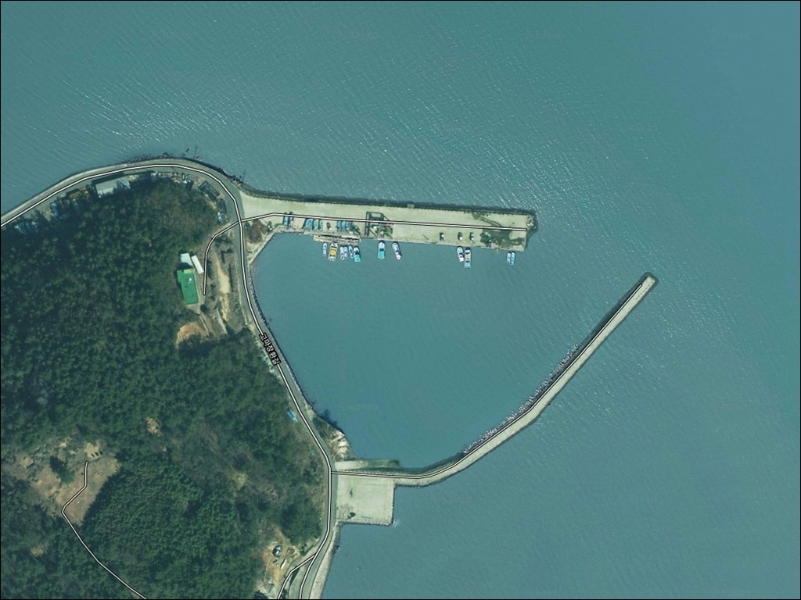
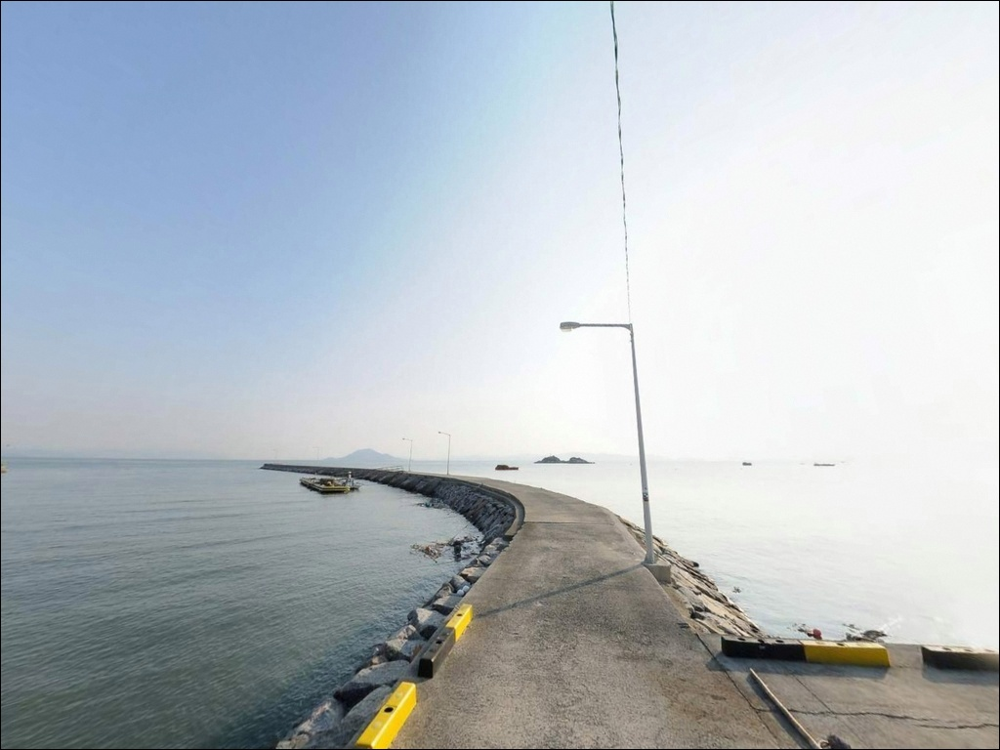
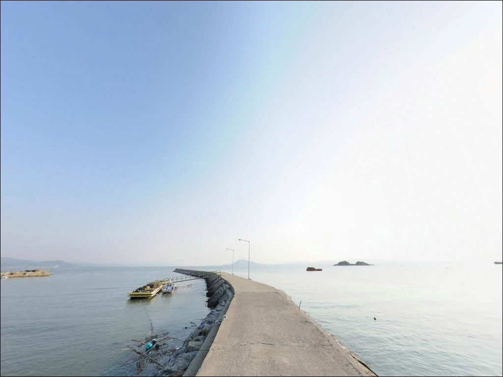
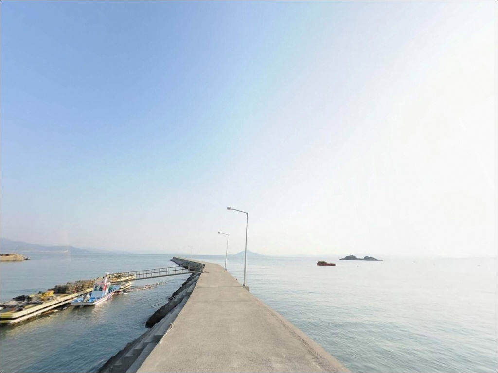
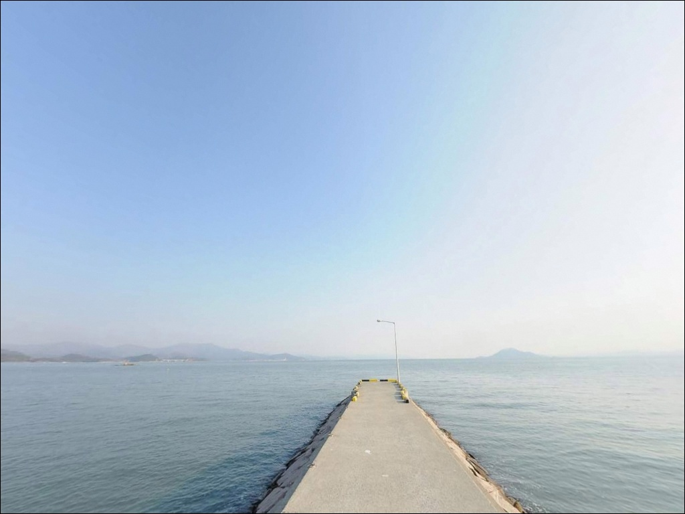
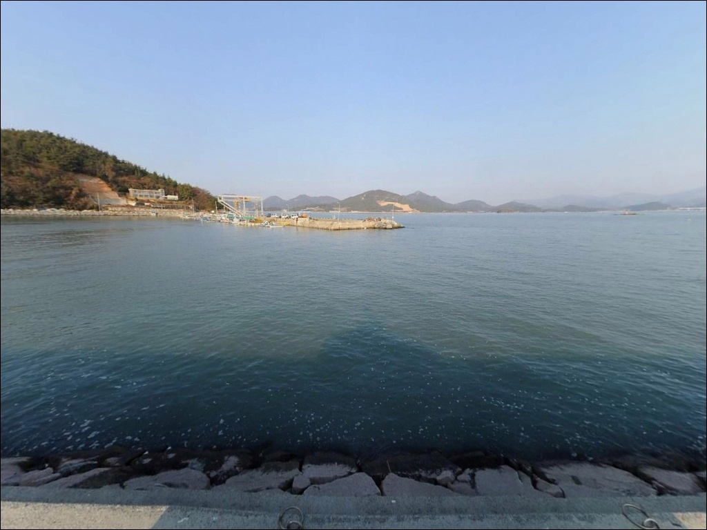
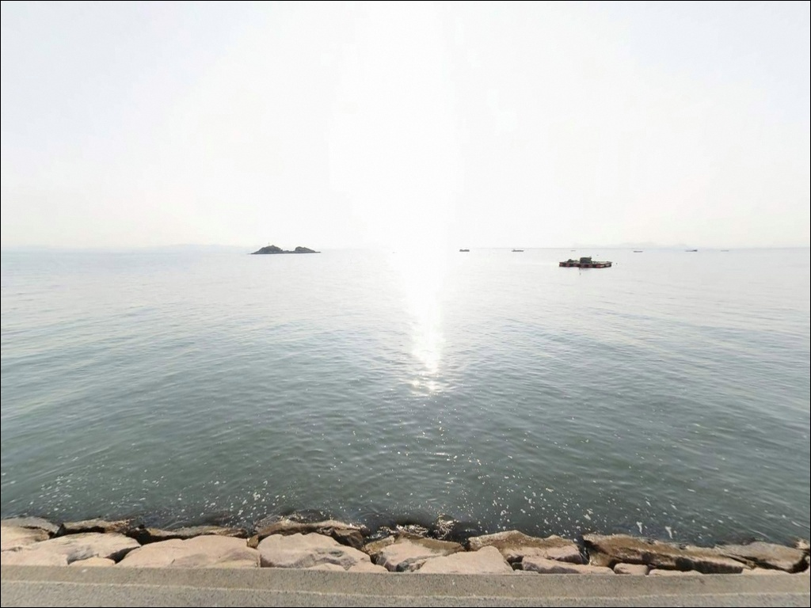
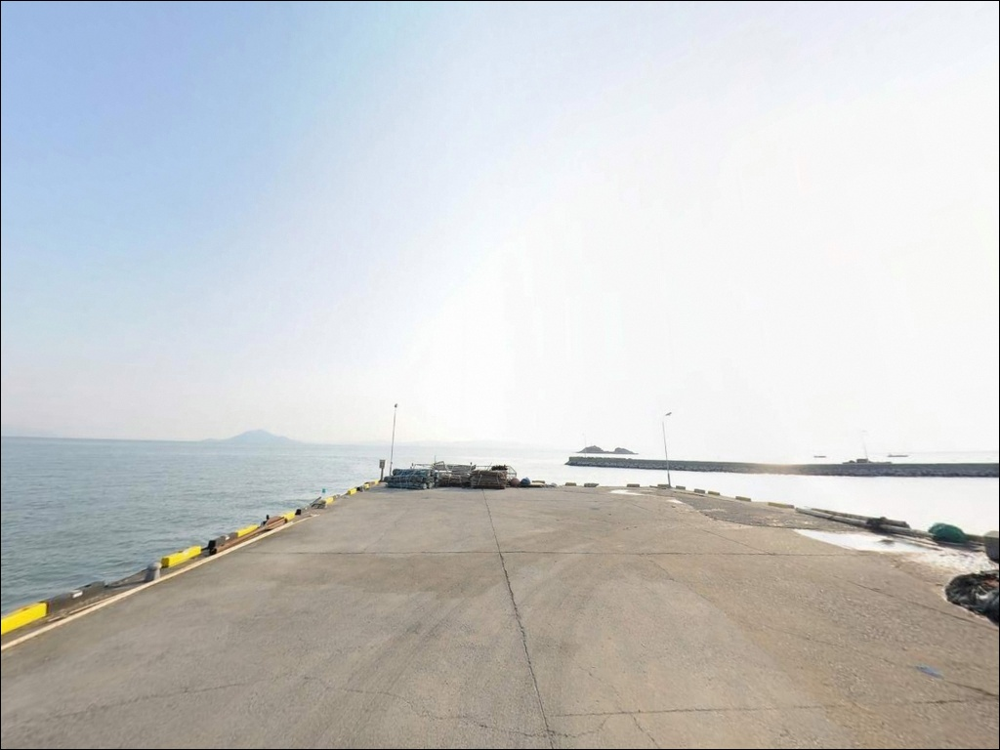
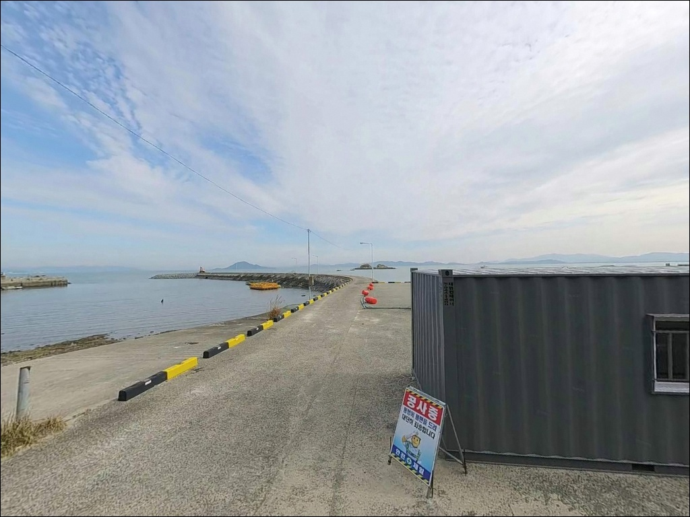

이 페이지에는 광고(제휴 링크 포함)가 있으며, 광고 링크를 통해 구매하면 운영자가 판매 수익 또는 수수료를 받을 수 있습니다. 포인트 사진: 카카오맵 스카이뷰·로드뷰. 이 페이지의 지도·사진 이미지는 카카오맵의 실제 서비스 이미지와 다를 수 있습니다.


장환항, 전남 장흥군 아늑한 만(灣) 지형 바다 차박 낚시 포인트
포인트 안내
장환항
전남 장흥군 관산읍 고마리 784-11
득량만 안쪽 어항이라고 해서
내항을 중심으로 자리를 잡으면
수심이 얕고 조류 흐름도 약해
낚시 효율이 현저히 떨어지는 구조입니다.
외항 방파제 끝단과 측면 경계 수역,
그리고 들물 타이밍이 맞아야
이 포인트의 조건이 제대로 열립니다.
장환항은 전남 장흥군 관산읍 고마리 연안부에
자리한 지방어항으로, 물양장 약 200m와
방파제 약 165m 규모의 소형 항구입니다.
득량만 특유의 잔잔하고 청정한 해역 환경이
이 포인트의 기본 바탕을 이루며,
원투낚시부터 찌낚시·루어까지 복수 방식으로
공략이 가능한 구조를 갖추고 있습니다.
이 글은 장환항의 진입 여건, 차박 환경,
지형 기반 낚시 조건, 방문 전 준비사항에
집중합니다.
조황 단정이나 특정 어종 보장은
이 글의 범위에 포함되지 않습니다.

1. 진입 동선과 차량 접근성
장환항은 고마장환길을 통해
항구까지 포장도로 진입이 가능합니다.
관산읍 중심부에서 해안 방향으로
이어지는 도로이며, 전 구간 포장 상태가
유지되고 있어 승용차부터 캠핑카까지
진입이 가능한 수준입니다.
급경사 구간은 없고 회차 공간도
항 내부에서 확보됩니다.
주차는 선착장 상단 콘크리트 공터와
방파제 진입부 인근 넓은 공간을
활용하는 방식이 기본입니다.
물양장과 도로가 맞닿아 있어
차를 가까이 대고 짐을 내리기 편한 구조이며,
어선 출입 동선을 막지 않는 자리가
우선 순위입니다.
새벽과 이른 아침은 어선 출항 시간대이므로
선착장 진입로에 장시간 차를 세우는 것은
피해야 합니다.
어민 작업 동선을 방해하지 않는 위치에
주차하는 것이 기본 매너입니다.

2. 차박 환경과 야간 체류 여건
장환항은 마을과 항구가 맞닿은 구조라
완전한 고립형 포인트는 아닙니다.
민가 밀집도가 있는 편이며,
야간에도 생활 조도와 간헐적인
차량 통행이 존재하는 환경입니다.
조용히 낚시하며 차 안에서 대기하는
스타일의 차박에는 활용 여지가 충분합니다.
항만 가로등이 설치되어 있어
야간 기본 시야는 확보됩니다.
그러나 방파제 끝단과 외항 구간은
조명이 부족해 개인 헤드랜턴은 필수입니다.
득량만 내만 구조라 파도는 잔잔한 편이지만
남풍 계열 바람이 강해지면
예상보다 너울이 일어날 수 있습니다.
차박이란 차량을 숙박 공간으로 활용하며
현장에서 하룻밤 머무는 여행 방식입니다.
장환항은 낚시 메인, 차박 보조 용도로
활용하기에 어울리는 구조이며,
장기 체류보다는 1박 출조 겸용으로
접근하는 편이 현실적입니다.


3. 주변 편의시설 및 인프라 현황
장환항에서 관산읍 중심부까지는
차량 기준 약 5~8분 거리입니다.
편의점·소형마트·주유소·식당이
관산읍 시가지에 집중되어 있어
출조 전 보급과 장비 점검을
관산읍에서 처리하는 것이 효율적입니다.
현장에서 부족한 소품이 생겨도
짧은 이동으로 보충이 가능한 구조입니다.
반경 10km 권역에는 관산읍 보건지소가 있어
응급 상황 발생 시 1차 대응이 가능합니다.
회진면 대리항 방향으로 이동하면
낚시점과 낚시 관련 시설이 모여 있어
채비 손실이 많을 경우
회진 방향을 활용하는 동선이
시간을 아끼는 방법입니다.

4. 방문 전에 챙겨야 할 준비사항
장환항은 득량만 내만이지만
조류 흐름이 물때에 따라 크게 달라지는 구조입니다.
바다타임에서 관산읍 기준 물때를 확인하고,
4물~12물 구간 들물 타이밍을 기준으로
입장 시각을 맞추는 것이 기본 전략입니다.
조류가 움직이지 않는 조금 타이밍은
조과 기대치가 낮습니다.
방파제 테트라포트 구간은
이동 시 미끄럼과 발판 불균형이 있으므로
스파이크 부착 갯바위 전용 신발을 준비합니다.
야간 낚시라면 헤드랜턴과 예비 조명을
반드시 챙겨야 하며,
구명조끼 착용은 방파제 끝단 진입 시
필수 조건입니다.
출조 전에 장흥 관산읍 일대 조황 검색을
먼저 해보시길 권합니다.
계절 어종과 최근 입질 패턴을
미리 파악하면 채비 선택에서
불필요한 손실을 줄일 수 있습니다.

5. 외항 방파제 끝단이 조과를 가르는 이유
장환항은 득량만 안쪽에 위치하지만
방파제 외항 끝단은 득량만 수로와
직접 접하는 구조입니다.
이 끝단 구간에서 조류 변화가 가장 뚜렷하며,
만조 기준 수심 3~5m 이상이 형성되어
낚시 채비가 효과적으로 작동하는
조건이 갖춰집니다.
내항은 완만한 수심이 이어지고
간조 시 일부 바닥이 드러나는
갯벌 지형이 주변에 넓게 분포합니다.
낚시 효율은 외항이 압도적으로 높으며,
내항 위주로 자리를 잡는 것은
이 포인트 구조를 잘못 읽는 판단입니다.
방파제 외항 측면과 석축 연결 구간에는
수중 구조물이 형성되어 있으며
어류 은신 조건이 갖춰진 지형입니다.
들물에 외항 조류가 살아나면
이 구간을 따라 입질이 집중되는 편입니다.
최신 조황은 출조 전에 꼭 검색해 보시기 바랍니다.


6. 장환항 지형에 맞는 낚시 스타일
이 포인트에서 가장 기본이 되는 방식은
원투낚시입니다.
외항 정면과 방파제 끝단에서
채비를 멀리 보내 바닥을 탐색하는 방식으로,
득량만 특유의 뻘 혼합 바닥 지형에서
붕장어·도다리·보리멸 계열 어종을
기대해볼 수 있는 공략법입니다.
봄철(3~5월)에는 도다리·보리멸
원투 시즌이 열리는 해역입니다.
찌낚시는 외항 석축 근처에서
반유동 채비로 벽면을 노리는 방식이
이 포인트 지형에 잘 맞습니다.
득량만 일대는 장흥군의 감성돔 치어
방류 사업이 수년간 이어진 해역으로,
가을(9~11월) 감성돔 찌낚시
시즌에 기대치가 올라가는 구조입니다.
루어낚시는 방파제 외항 측과
갯바위 연결 구간의 완만한 여밭을
소프트베이트·지그헤드 채비로
천천히 탐색하는 방식이 어울립니다.
학꽁치·숭어·볼락 등 내만형 어종이
이 지형에서 활동하는 편이며,
가을철 갑오징어·주꾸미 에깅도
방파제 석축 주위를 탐색하는 방식으로
병행이 가능합니다.

7. 대안 포인트와 플랜 B 동선
장환항 조류 여건이 맞지 않거나
주차 공간이 여의치 않을 경우,
동일 해역 안에서 이동할 수 있는
대안이 있습니다.
관산읍 해안선을 따라 이어지는
죽청리 일대 소형 선착장과
삼산방조제 상단이 첫 번째 선택지로,
득량만 동일 해역 조건이어서
유사한 낚시 패턴을 그대로 적용할 수 있습니다.
더 넓은 규모의 포인트를 원한다면
장환항에서 약 10km 거리의
회진항 방파제가 대안입니다.
장흥 남부의 대표적인 방파제 포인트로
외항 낚시 여건이 다양하고
감성돔·농어를 포함한 어종 구성이
사계절 안정적인 편입니다.
장환항을 처음 찾는다면
회진항을 기점으로 두고
장환항을 병행 탐색하는 동선도
효율적인 방법입니다.
차박 여건이 더 여유로운 공간을 원한다면
장흥 해안도로 인근의
주차 공간이 넓은 방파제를
위성지도로 사전 확인한 뒤
이동하는 방식을 권합니다.

외항 끝단 들물 타이밍,
이 두 가지를 맞추면
장환항이 달라집니다
방파제 원투낚시와 찌낚시를 주력으로 삼는 낚시꾼이라면
장환항의 외항 구조는 잘 맞는 조건입니다.
가을 감성돔 찌낚시 시즌과
봄 도다리·보리멸 원투 시즌에
타이밍을 맞춰 방문한다면
이 포인트가 가진 조건을 제대로 활용하는 방법입니다.
반면 내항 위주로 자리를 잡거나
물때 계산 없이 조금 타이밍에 진입하면
조류 흐름이 약해 채비가 제대로 작동하지 않고
헛수고로 끝날 가능성이 높습니다.
들물 타이밍 확인, 외항 자리 우선 선점,
기상 재확인—이 세 가지를 갖추고 가면
장환항에서 기억에 남는 출조가 될 수 있는 곳입니다.
관산읍 생활권과 가까운 이 포인트는
낚시 후 간단히 차 안에서 하룻밤 쉬어가는
출조 겸 차박 여행자에게도 부담 없는 선택지입니다.